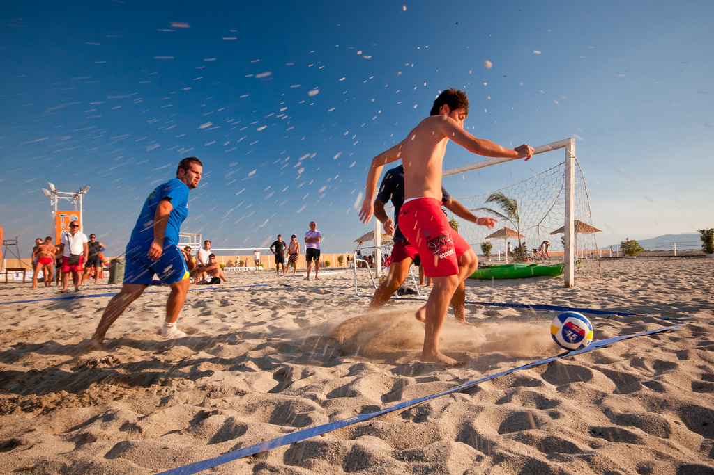
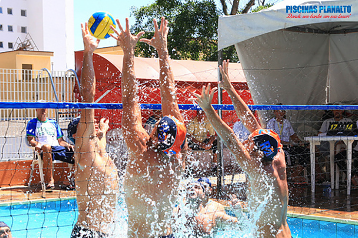

Esportes com Bola
Tão antigos quanto o homem, os esportes são uma das invenções mais benéficas do home. Além de manter o corpo saudável, ainda axiliam na criação de uma série de comportamentos posisitivos, como a humildade, a união, a empatia, dentre outros.
Eos esportes com bola são, sem nenhum dúvida, os mais populares. Mas você sabe a diferença entre alguns deles? è justamente isso que iremos descobrir abaixo
| Esporte | Origem | Ambiente | Objetivo | Equipe | ||
|---|---|---|---|---|---|---|
1 |
|
Baseboll |
EUA,1971 |
Campo com 1/4 de cículo, de 92 e 108,2m raio. |
Realizar o maior número de corridas. |
Nove jogadores em cada time |
2 |
 |
beach soccer |
1930, Brasil |
Quadra de areia com 35 ou 37 m x 26 ou 27 de largura |
Realizar gols no campo adversário |
Cinco jogadores em cada time |
3 |
 |
biribol |
1968, Brasil |
Piscina com 4 x 8 x 1,3m |
Derrubar a bola na quadra adversária |
2 a 4 jogadores por times. |
4 |
|
Frescobol |
Brasil, 1946. |
Ao ar livre |
Manter a bola no ar pelo maior tempo possível. |
Geralmente um contra um. |